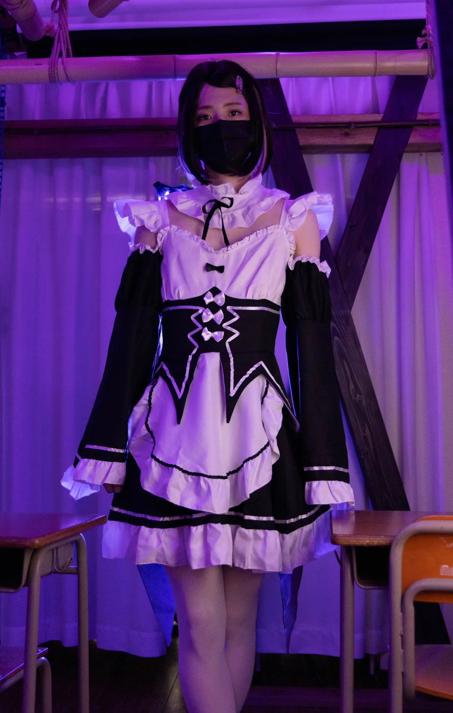
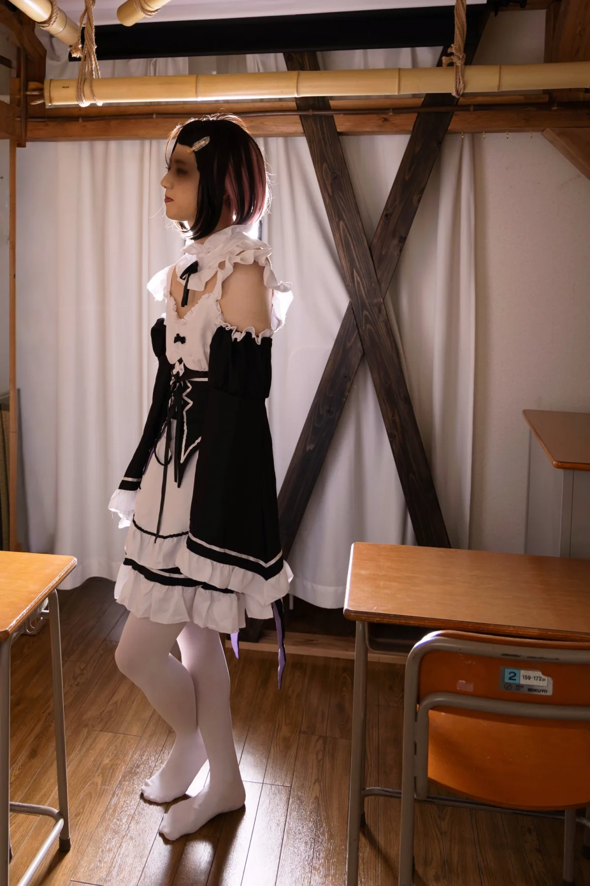
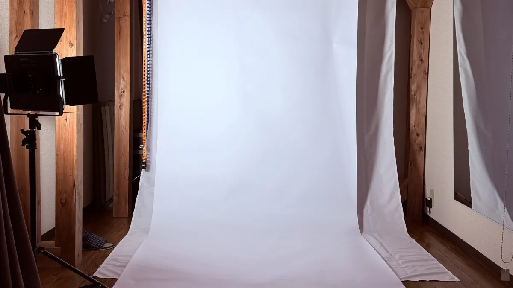
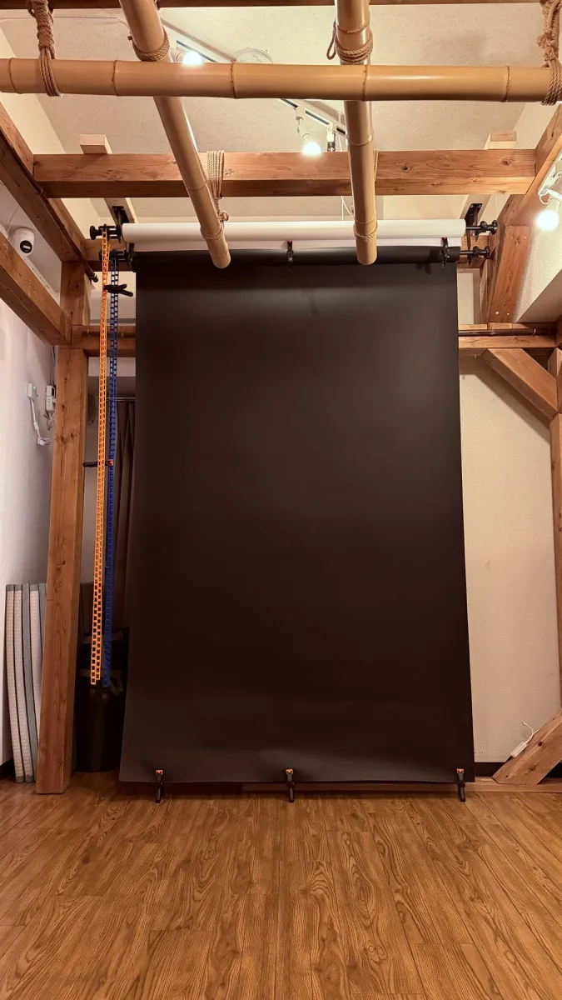
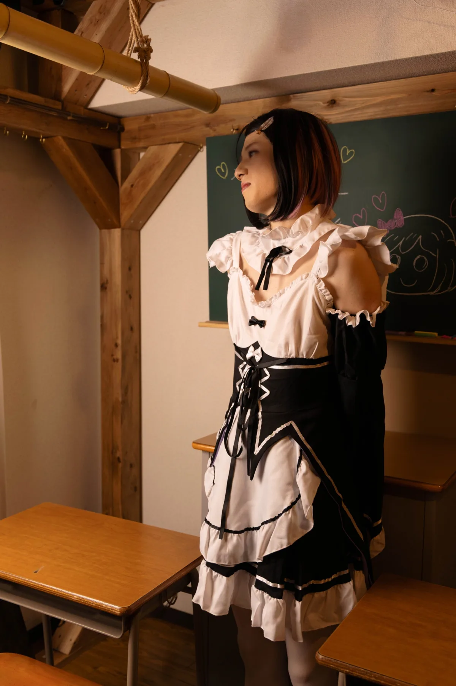
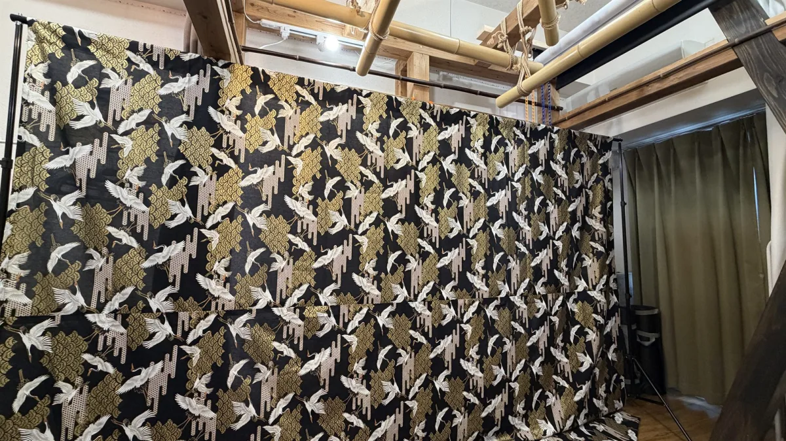
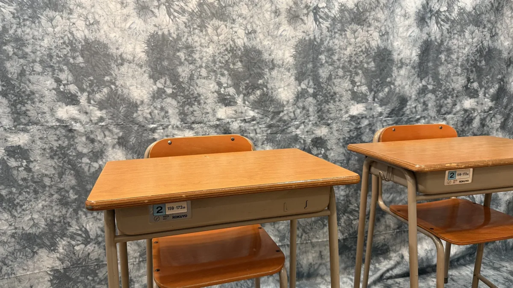
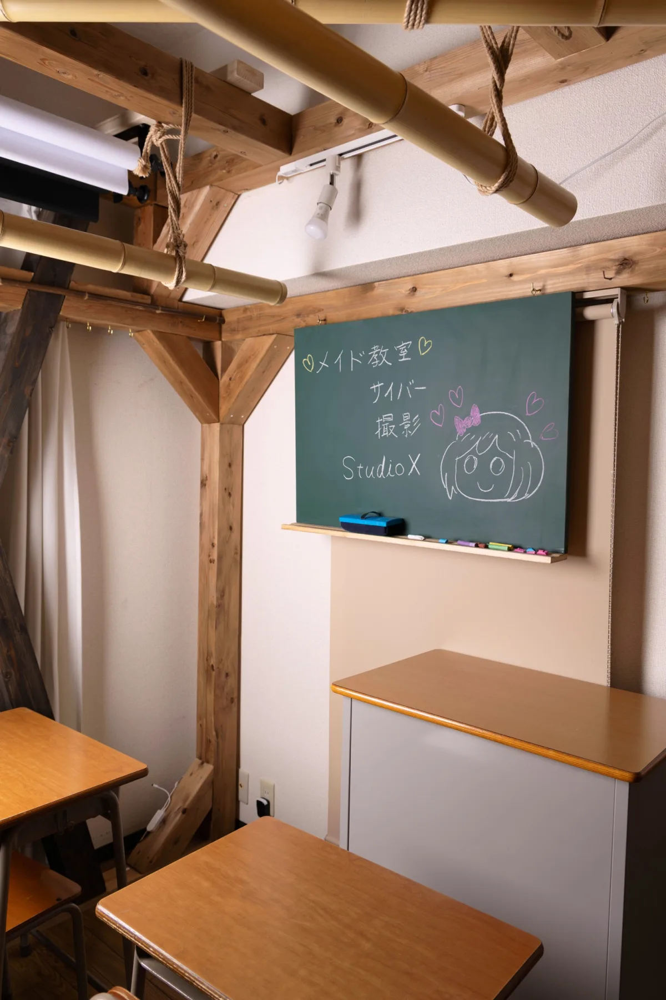

01 / COLOR
サイバー・ネオン
色を変えるだけで、同じ衣装が別の物語になる。
PRIVATE CREATIVE ROOM / 1-4 PEOPLE
照明で世界が変わる、少人数作品撮りの部屋。白・黒背景、教室セット、フルカラー照明を、完全個室でゆっくり使えます。

01 / SCHOOL LIGHT
Same room.
Different story.
スマホ撮影OK
人数追加料金なし
無人・完全貸切
白黒背景・照明無料
WHY STUDIO X
Studio Xは、2〜4人の作品撮りにちょうどいいワンルーム。大人数用の広さではなく、照明・背景・小物を近い距離で組み合わせ、短時間でも密度のある一枚を作ることに向いています。
カメラマンがいないセルフ撮影も、一眼カメラでの本格撮影も歓迎です。
ONE ROOM, SIX WORLDS
衣装やテーマに合わせて、背景と光を選べます。

色を変えるだけで、同じ衣装が別の物語になる。

宣材、プロフィール、衣装記録に。

被写体を闇から浮かび上がらせる。

学校机、椅子、教卓、黒板を常設。

和装、花魁、退廃的な創作に。

汚し、退廃、物語のある背景に。
MADE FOR SMALL CREWS
衣装テストから2〜4人の作品撮りまで。完全個室なので周囲を気にせず集中できます。
白背景のシンプルな一枚から、色と影を使ったダークポートレートまで。
スマホでも利用可能。大型ミラーで衣装を整えながら、自分たちのペースで撮れます。
照明の色や角度を試したい方にも。外部照明やストロボの持ち込みも可能です。
FIRST STUDIO SESSION
予約から入室までオンラインで完結。撮る雰囲気を決めておけば、当日は照明と背景を組み合わせるだけです。
白・黒・教室・カラー照明から、衣装に合う方向を決めます。
スペースマーケットで空き時間を確認し、そのまま予約・決済できます。
案内された番号で入室。無人運営なので、完全個室のまま撮影を始められます。
「ライトも2機あり、明るさも十分なので撮影に使いやすかったです。天井のライトも変えられるので、雰囲気に合わせて変えられるのが魅力的でした。」
WHAT'S INSIDE
基本の背景と照明は利用料金内。より本格的な機材の持ち込みもできます。

PRICE
最短2時間から。下記は、このページの予約リンクから15%OFFが適用された場合の目安です。
WEEKDAY
約1,963円 / 1時間〜
平日 / 最低利用2時間
WEEKEND & HOLIDAY
約2,454円 / 1時間〜
土日祝 / 最低利用2時間
人数追加料金なし（最大4名）
3か月前から前日まで予約可能
正式な料金は予約画面でご確認ください
ACCESS
営業時間 8:00〜23:00 / 年中無休
専用駐車場なし・近隣コインパーキングあり
FAQ
はい。天井照明や常設ライトを使えるため、スマートフォンでの撮影や自撮りにもご利用いただけます。
1〜4名まで人数追加料金なしで利用できます。5名以上をご希望の場合は、事前にお問い合わせください。
ユニットバス、または木組みフレームのカーテン内を着替えスペースとして利用できます。
持ち込み可能です。白・黒背景紙、天井フルカラーLED、LEDパネルライトなどの常設備品は利用料金内で使えます。
スペースマーケットは前日まで受付です。当日の空き確認はX（@studiox2026）のDMからお問い合わせください。